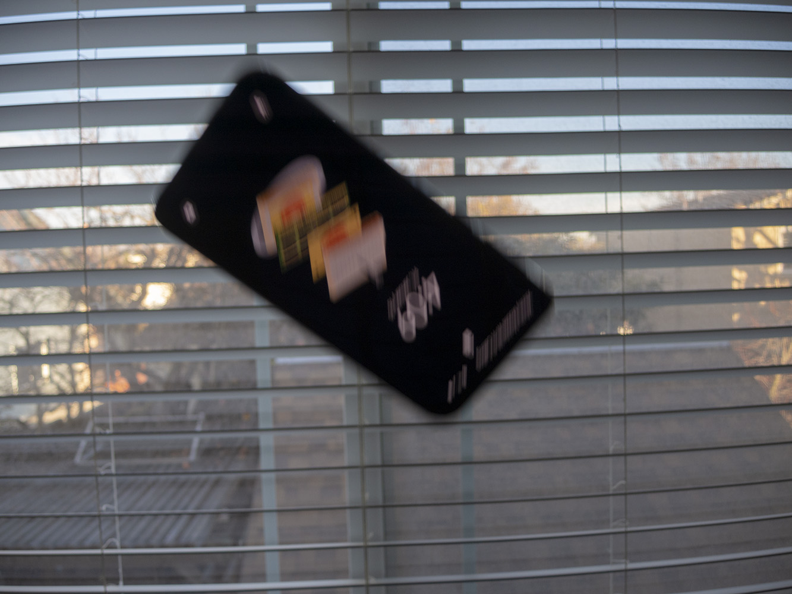

From today's featured article

A Galaxy S10e falling in front of a window for some reason idk
The
Samsung Galaxy S10 series of smartphones are a lineup of cellular devices developed by Samsung Electronics, and is the 10th iteration of devices in their S series of smartphones powered by the Android operating system. Unveiled in 2019, the devices in the series share common specifications such as an Exynos 9820 system-on-chip (with the US models being equipped with a superior Snapdragon 855 that is more power efficient and more capable), a hole-punch style front-facing camera, and an HDR10+ compatible display so you can watch like 5 YouTube videos that have HDR and also pay extra for Netflix UHD just to get HDR. They are the last iteration of S-series devices to retain a 3.5mm headphone jack (later, it was revealed that The Committee For Bluetooth Device Adoption bribed all major smartphone companies to drop the headphone jack so consumers would buy more Bluetooth headsets). All devices run One UI, a software overlay developed for Android by Samsung Electronics for Samsung Galaxy devices. They are notorious for slower Android upgrades compared to other smartphone manufacturers such as Google, although security updates are usually distributed a few days following the start of each month. The entire S10 series comes preinstalled with Facebook and Microsoft Office Mobile (which you can't even access because it's a hidden system app) because everyone uses Facebook and MS Office and there totally wasn't a monetary incentive behind their inclusion. (
Full article...)
Did you know ...